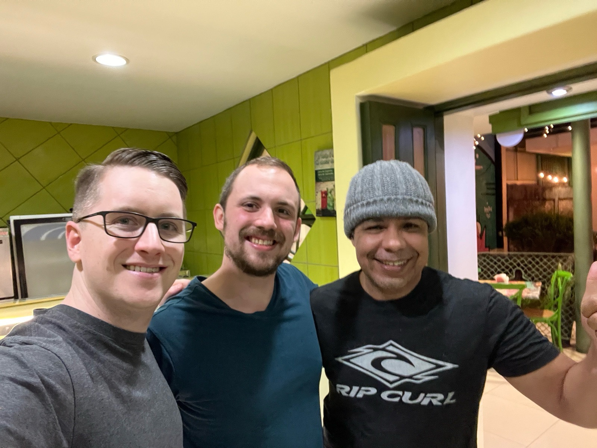
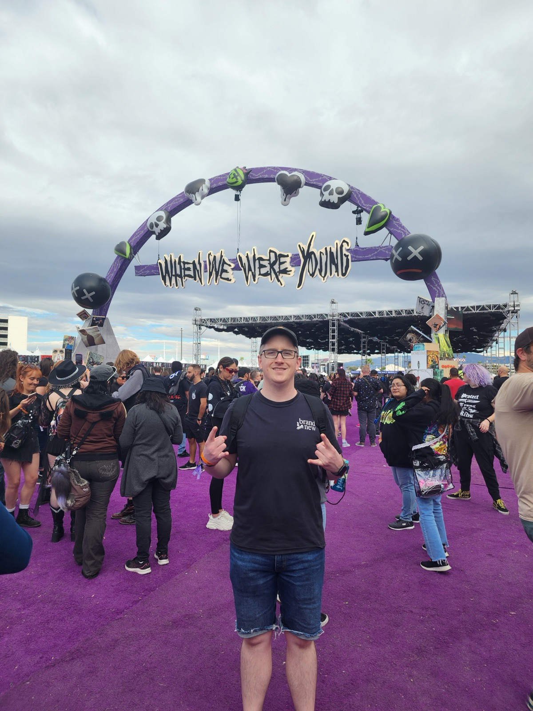
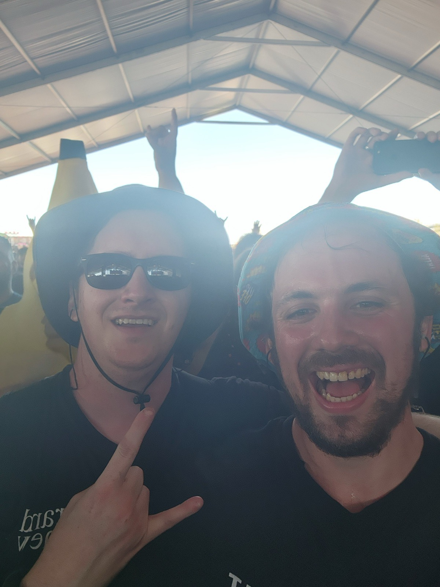
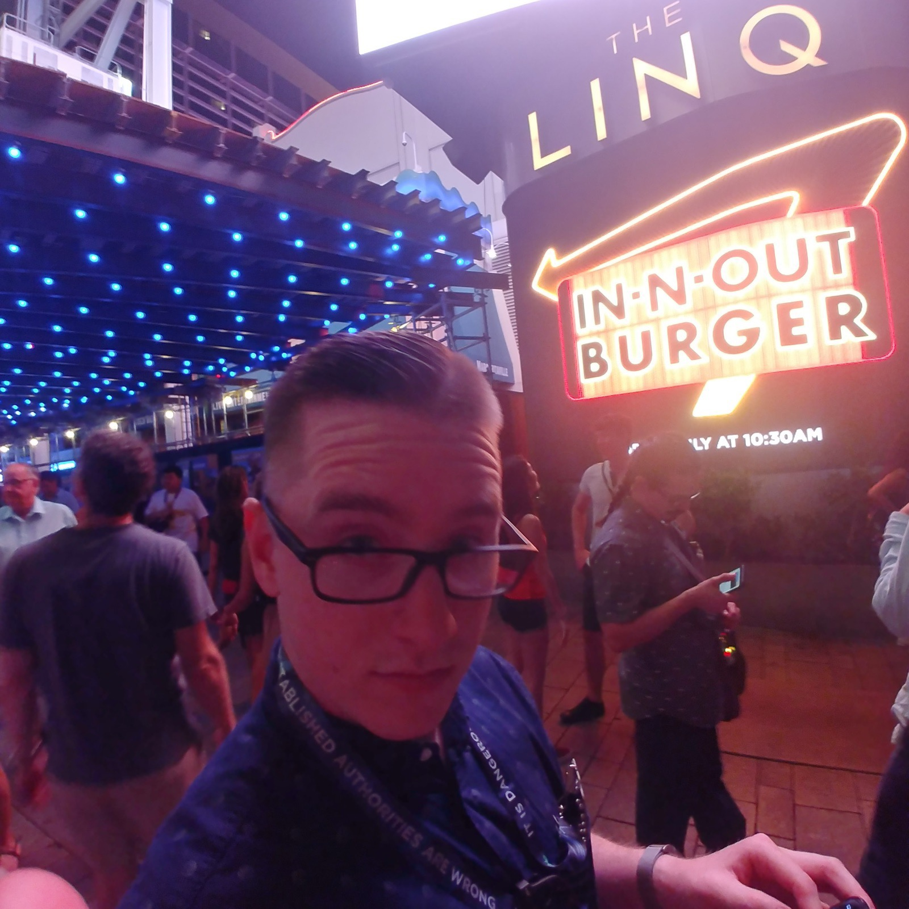
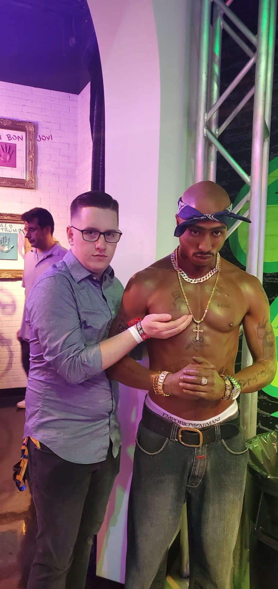
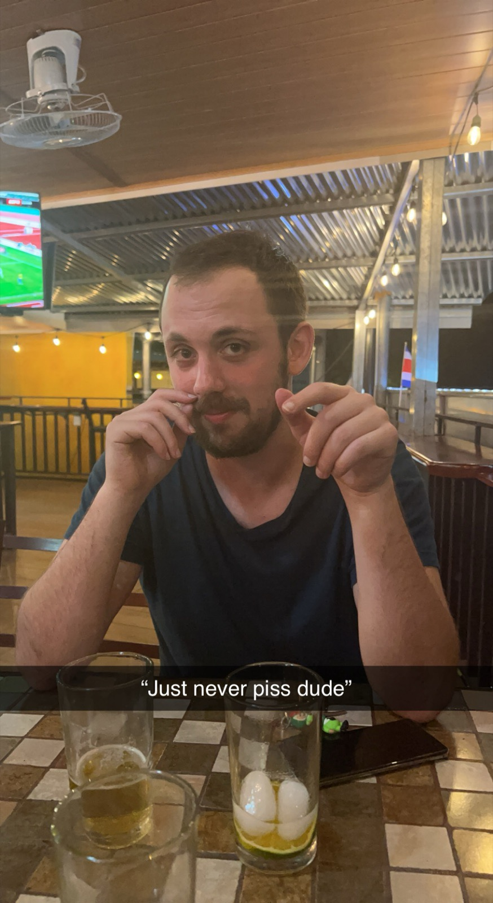
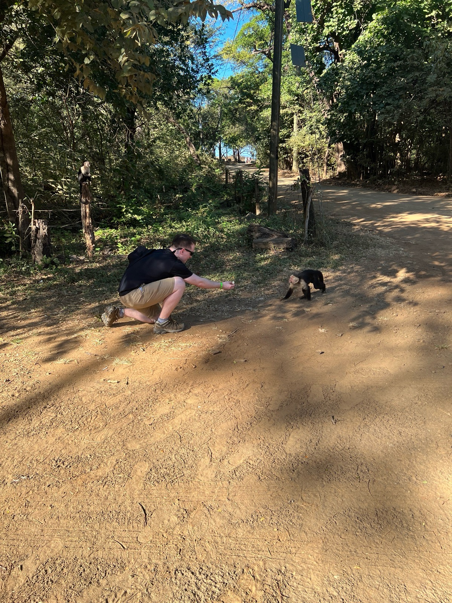
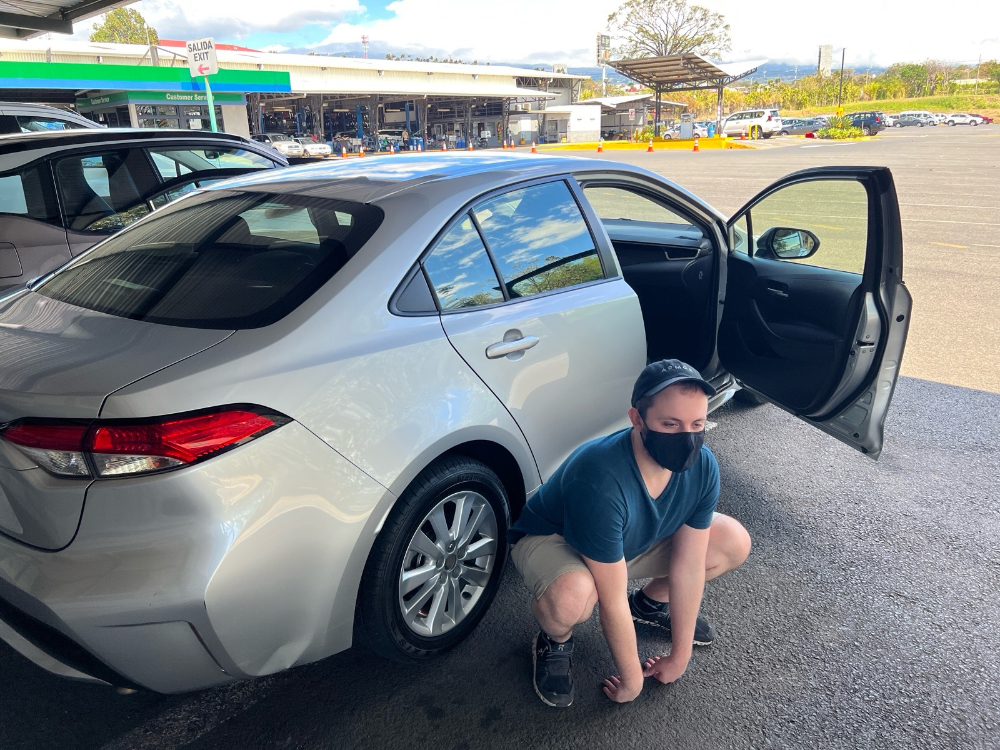
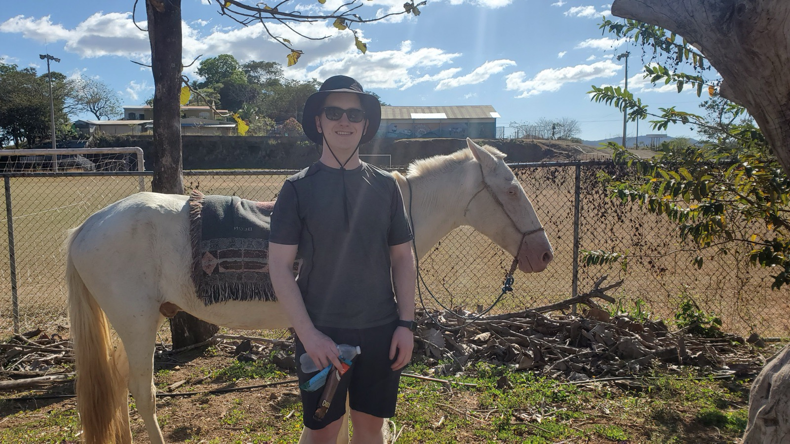
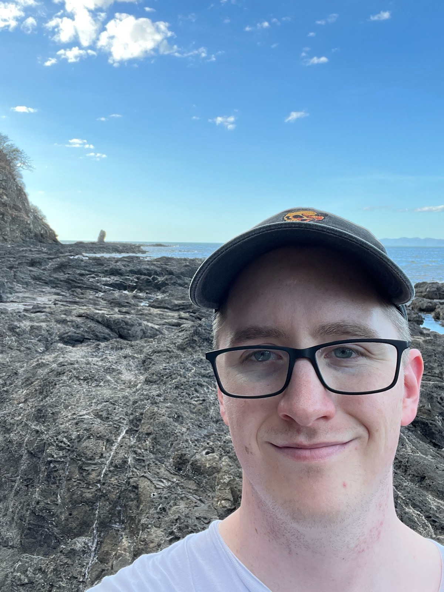

I · Hello Everyone
Hello everyone!
For those that don’t know me I am Daniel, Matthew’s life long friend and brother by bond. I met Matthew about 17 years ago. During these years, we’ve lived together, worked together, traveled together, gone to concerts, and enjoyed too many beers. From all of these experiences, I have a few choice stories I wanted to share so we can get to know Matthew a bit better.

II · Thirty Minutes to Taco Bell
Matthew and I lived in rural upstate New York. Where we would need to drive 30 minutes to the nearest taco bell. Which of course we would do every week night at 11pm. On the way to Taco Bell we would chat or listen to music. Matthew introduced me to a lot of music. He would have hundreds of CD’s in his car and tell me about all the different bands that he was listening to. Underoath, Devil Wears Prada, Silverstein, The Color Fred, Chiodos, The Front Bottoms, Norma Jean. I could list probably 50 bands Matthew personally introduced to me.
He snuck me into concerts saying that he was my “Uncle” and even though I only had a school ID he would vouch that I was “definitely 16”. One of the worst snowstorms of the century didn’t stop us from driving 2 hours to Buffalo to see Four Year Strong. One day we Road Tripped down to New Jersey for a music festival, saw the whole festival and then left that evening and made it back to Upstate New York at sunrise. Matthew drove through the whole night to do this.


III · Riot Fest
If its not clear by now Matthew really loves music. My favorite Music story with Matthew comes from when we went to Riot Fest in Chicago. This was only a few years ago and the festival was a multi-day all day music concert. On the second day of the festival, we purchased “After Show” tickets to see another band after seeing bands for 12 hours. We went to this show and at this point our bodies started to fail us. The mixture of too much beer and moshpits caught up to us.
My sister, her partner Kyle and her friend Jeanette picked us up in my car and started to drive us home. They had gotten us some of the most delicious burritos as a callback to our taco bell days. While we were enjoying this gift from heaven, my car got too jealous of all of our fun and wanted to open up a moshpit too. I saw the headlights coming right at me and In the middle of a chicago intersection we got T-Boned. The burritos went flying, but thankfully we were all ok.
We got out of the car and Matthew needed a quick little reset at 1am in front of an abandoned business in downtown Chicago. While he was resting, My sister had gathered the floor burrito and asked if I still wanted it. Of course I said yes. Matthew proceeded to wake up in daze to see me squatting in front of him eating the burritos we got. To which he astutely responded with:
“But that is floor burrito”. I nodded yes, and offered him some of the burrito which he proceeded to eat with me.


IV · The Faraway Land of Costa Rica
The next story takes us to the faraway land of Costa Rica. A few years ago, Matthew and I went to travel there for a few weeks to try out this whole work remotely thing. It really was great. We worked from the beach, met really nice people. We ate way too much food. During this trip we had deep intellectual conversations like. “I wonder if they have bathrooms at this restaurant". To which my response was. “Just never piss dude.”


On this trip we rented a car and roadtripped through the country. Costa Rica is great, but its roads leave a lot to be desired. Thankfully we had a great offroad vehicle called the 2020 Toyota Corolla. Which we shredded the tires on by driving up a dirt road on a mountain. After freaking out a bit about being lost and abandoned with no cell service, we did the sensible thing and rode it 20 miles back to our hotel on the rims, got the tires replaced and went on with our trip.


V · The Toast
If it's not clear by now, Matthew is really a “Ride or Die” kind of friend. There are a countless number of moments where Matthew has helped me out, guided me, or stuck with me through hardship. Matthew and Brittney together really embody this “Ride or Die” spirit for each other. I can see in their relationship how they support each other and I know that they will be able to get through anything that comes next for them.

I know we’re all super happy for their day so let's all have a toast to them!
To Matthew & Brittney